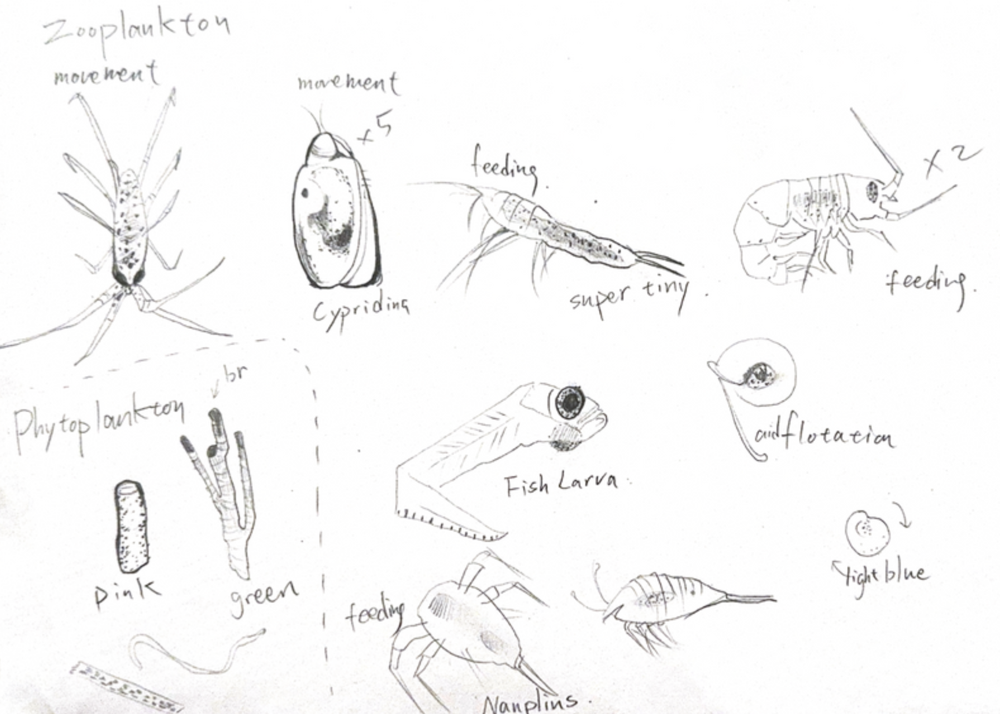

Marine Biology · Scientific Illustration · 2026
Marine Biology
Scientific Illustration

Week 2 · Lab Practical
Marine Organisms — Biological Classification
Identified and classified 20 marine organisms by common name, phylum, and habitat. Species ranged from Asterias amurensis (Echinodermata, silt and sand sheltered reef) to zooplankton and intertidal invertebrates observed in the Queenscliff marine environment.

Part 1: Biological Classification — Common Name, Phylum, Habitat

Part 1 continued — organisms 11–20
Week 2 · Lab Practical
Zooplankton & Specimen Sketches
Direct observation sketches from lab microscopy: zooplankton movement studies, phytoplankton morphology, fish larva, and polychaete worm anatomy including notopodium, neuropodium, collar, thorax, and bipinnate radioles. Also documented polychaete worms ×2, shrimp, and snail specimens.

Polychaete worm anatomy — notopodium, collar, bipinnate radioles

Specimen sketches — polychaete worms ×2, shrimp, snail

Zooplankton observation — Cypriding, Fish Larva, Nauplius, Phytoplankton (pink & green)
Saturday 21 Mar 2026 · Queenscliff Excursion D1
Sea Search — Snail Catch Per Unit Effort
Point-intercept quadrat survey at Queenscliff Marine National Park. Recorded algae and sessile invertebrate cover (9:21–9:09, Med cloud / Low wind / None rain). Measured target species — Limpet, Top Shell, Warrener, Dog Winkle — against control species including False Limpet and Cominella lineolata. 49-point intercept count documented: limpet, false limpet, mussel, snail, rock.

Table 2.3 — Target vs control species with minimum size thresholds

Target Species 1: Limpet / Control Species 1: False Limpet — size measurements

Target Species 2: Dicathais orbita (Dog whelk) / Control: Cominella lineolata

Target Species 3: Turbo undulatus (Warrener) / Control: Bembicium nanum (Conniwink)

2.1 Algae & Sessile Invertebrate Point Intercept Counts — 49-point survey
Sunday 22 Mar 2026 · Queenscliff Excursion D2
Seagrass Beds — Seine Sampling
Seine net sampling across three treatments: Bare 2, Seagrass 2, Bare 3. Team members: Emma Yige Hu, Maddie Hupfeld, Sienna Coss, Abigail Mak, Ella Poleary, Paige. Notable species: Reed leatherjacket, Decorated crab, Pipefish, Weed fish, Girdle goby, Sand goby, Dumpling squid, Seahorse, Golden eye leatherjacket, Whiting, Australian salmon. Seagrass treatment showed more species diversity than bare patch.

Seagrass Beds Seine Sampling — BIOL2255-2026, Queenscliff. Date: 22 March 2026
Week 9 · Lab Practical
Fish Parasitology — Mackerel Dissection
Dissection of a female Mackerel (total length 34cm, standard length 29cm, fork length 30cm). Findings: gills — atypical trematodes (gymnozoids) ×20 visually spotted, long/stretched form; intestines — Nematode ×1, Acanthocephalan ×1; stomach wash — larval tapeworm ×1 (burrowed in tissues), Trematodes ×2. External surfaces and fins: no parasites. Stomach contents: zooplankton, few copepods.

Week 9 Fish Parasites — collection info, procedures

Findings — trematodes, nematode, acanthocephalan, larval tapeworm
Week · Lab Practical
Zooplankton Data Sheet
Tally counts across two samples: Protozoans, Cnidaria, Arthropoda, Mollusca, Echinodermata, Chordata. Notable: barnacle larva, mysid shrimp, tanaid shrimp, ostracod, fish larva, calanoid copepod. Other: pennate diatoms.

Zooplankton Data Sheet — Sample 1 & 2 tally counts

Continued — Mollusca, Bryozoa, Echinodermata, Chordata